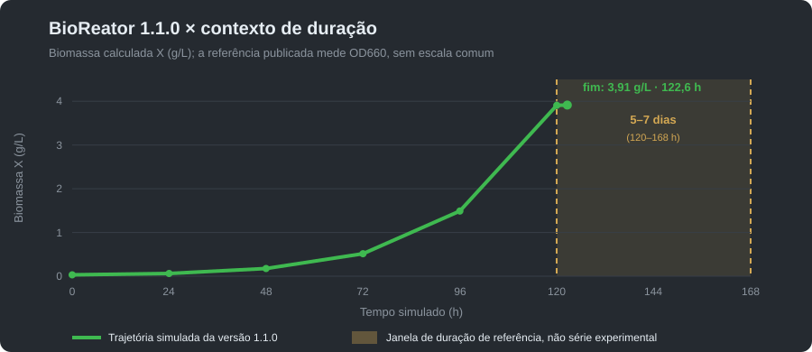
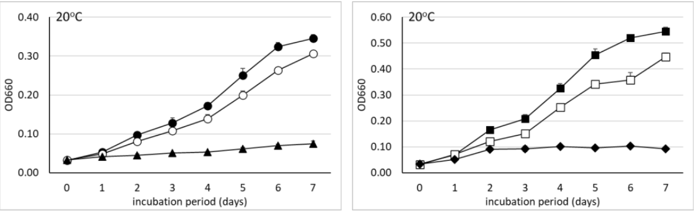

Exemplo de batelada — BioReator 4.0
Carga de referência da edição Community 1.1.0, publicada em 12/10/2026. Os números são a leitura do simulador, não uma medição de planta.
Trajetória da versão 1.1.0
Setpoints: tanque de 100 L, 75 L úteis, 1 vvm, 400 rpm, X₀ = 0,03 g/L, S₀ = 10 g/L, 28 °C e pH 6,8. O lote termina automaticamente em 122,6 h (5,1 dias), quando S ≈ 0,000917 g/L; X final ≈ 3,912569 g/L.

| Tempo (h) | X (g/L) | S (g/L) | OD (mg/L) | OD (% sat.) | UFC/mL estimada |
|---|---|---|---|---|---|
| 0 | 0,030000 | 10,000000 | 7,800000 | 100,0000 | 6,000000 × 10⁷ |
| 24 | 0,061072 | 9,919067 | 7,774789 | 99,6768 | 1,221443 × 10⁸ |
| 48 | 0,175652 | 9,627710 | 7,724447 | 99,0314 | 3,513042 × 10⁸ |
| 72 | 0,513008 | 8,770453 | 7,579427 | 97,1721 | 1,026017 × 10⁹ |
| 96 | 1,489210 | 6,288780 | 7,166167 | 91,8739 | 2,978419 × 10⁹ |
| 120 | 3,905375 | 0,090836 | 7,149505 | 91,6603 | 7,810751 × 10⁹ |
| 122,6 · fim | 3,912569 | 0,000917 | 7,559477 | 96,9164 | 7,825138 × 10⁹ |
A UFC/mL é apenas X multiplicado pelo fator configurado no perfil (2,0 × 10⁹ UFC/mL por g/L); não é contagem de células viáveis. A série não demonstra produtividade nem equivalência com a curva publicada.
Baixar CSV didático da versão 1.1.0Referência histórica: carga da versão 1.0.0
O perfil fica em Bradyrhizobium japonicum e o regime em batelada. O tanque tem 100 L, com 75% de volume de trabalho: 75 L de caldo. A aeração é 1 vvm e a rotação é 400 rpm. A temperatura é 28 °C e o pH é 6,75, os dois dentro da faixa do perfil (pH 6,5 a 7,0).
- Biomassa inicial X = 0,20 g/L, isto é, 15 g no tanque.
- Substrato inicial S = 20 g/L, isto é, 1.500 g no tanque.
- Oxigênio dissolvido parte da saturação de referência, 7,8 mg/L.
Com essa agitação e esse ar, o console estima kLa ≈ 157 h⁻¹. A potência de agitação fica em cerca de 122 W e a de aeração em cerca de 114 W, para um cilindro de líquido com cerca de 0,46 m de diâmetro. Essa conta é a correlação de Van’t Riet do console. Ela serve para ler a tela. Ela não é lei de scale-up da planta.
Figura publicada e contexto histórico da versão 1.0.0


A carga do programa termina em cerca de 40 h. A curva publicada acompanha crescimento por 7 dias, e revisões de produção de bioinoculantes descrevem ciclos que podem levar vários dias [R6, R8]. A diferença é explícita: esta Community usa uma cinética simplificada e não representa a duração de um protocolo de produção.
O resultado final de 8,6 g/L corresponde, como aproximação, a cerca de 1 × 1010 UFC/mL sob uma hipótese de 0,86 pg de massa seca por UFC. Isso é uma conversão ilustrativa, não uma contagem de viáveis: a relação depende de cepa, meio, agregação e viabilidade e não é calculada pelo programa.
O que a tela mostra
O crescimento segue Monod no substrato: µ = 0,10 × S / (0,25 + S), em h⁻¹. No instante inicial, S = 20 g/L e µ ≈ 0,099 h⁻¹. Cada grama de substrato consumida forma 0,42 g de biomassa. O oxigênio é vigiado em paralelo e a hipóxia não reduz µ.
| Hora | X (g/L) | S (g/L) | OD | µ (h⁻¹) |
|---|---|---|---|---|
| 0 | 0,20 | 20,0 | 7,8 mg/L · 100% | 0,099 |
| 6 | 0,36 | 19,6 | 7,5 mg/L · 96% | 0,099 |
| 12 | 0,65 | 18,9 | 7,3 mg/L · 94% | 0,099 |
| 24 | 2,12 | 15,4 | 6,2 mg/L · 79% | 0,098 |
| cerca de 40 | 8,6 | esgotado | cerca de 1,2 mg/L · 16% | 0 |
Por volta de 38 h o substrato cai abaixo de 1 g/L, que é 5% da carga, e o oxigênio dissolvido cruza 20% da saturação. A tela passa a mostrar substrato baixo e hipóxia. Por volta de 40 h o substrato acaba e X permanece em 8,6 g/L: 15 g de inóculo mais 630 g formados a partir dos 1.500 g de substrato. O rendimento fecha em 0,42 g/g, dentro da tolerância de 1e-6.
Depois disso o oxigênio fica perto de 16% da saturação. O consumo de oxigênio continua proporcional à biomassa que já está no tanque, e o aviso de hipóxia permanece. O crescimento, porém, já parou porque não há substrato.
Como ler os avisos dessa carga
- Até cerca de 24 h a carga está folgada: substrato alto e oxigênio acima de 70% da saturação. pH e temperatura estão na faixa, então esses dois avisos ficam quietos.
- Aviso de substrato baixo: S menor que 5% do valor inicial. Nesta carga, cerca de 38 h.
- Hipóxia: oxigênio dissolvido abaixo de 20% de 7,8 mg/L. O aviso entra no mesmo trecho. µ não é reduzido por causa dele.
- Substrato esgotado: a curva de X para em 8,6 g/L. Parar grava o lote no histórico. Exportar CSV grava a série na pasta de laudos.
Se a rotação ou o ar forem a zero, o kLa cai a zero e o aviso de hipóxia aparece cedo. A biomassa continua a de Monod enquanto houver substrato.
O que cada símbolo quer dizer
- µ é a taxa específica de crescimento, em 1/h. µmáx deste perfil é 0,10 h⁻¹ e Ks é 0,25 g/L.
- Yxs é 0,42 g de biomassa por g de substrato. O motor impõe esse rendimento em cada passo.
- qO₂ é 0,12 g de O₂ por g de biomassa por hora. OUR = qO₂ × X.
- kLa é o coeficiente volumétrico de transferência de oxigênio, em 1/h. OTR = kLa × (saturação − OD).
- vvm é o volume de ar por volume de líquido por minuto. 1 vvm em 75 L são 75 L de ar por minuto.
pH e temperatura são vigiados contra o perfil, mas não alteram µ nesta versão. Consulte os parâmetros e suas referências.
Limites desta curva
- Não há fase lag nem morte celular.
- Ao esgotar o substrato, o OD não volta a subir: o consumo de oxigênio permanece proporcional à biomassa.
- Hipóxia é registrada, mas não reduz µ. pH e temperatura são avisos e não alteram a cinética nesta versão.
- O programa não simula contagem de viáveis, contaminação, preparo de meio ou identidade da cepa.
Arquivo CSV
O CSV da versão atual usa separador ponto e vírgula, decimal com ponto e acrescenta a estimativa configurada de UFC/mL. Cabeçalho:
t_h;X_g_L;S_g_L;P_g_L;DO_mg_L;DO_pct;volume_L;kLa_1_h;OUR_g_L_h;OTR_g_L_h;mode;viable_CFU_ml
Baixar CSV 1.1.0 · CSV histórico 1.0.0 · Exercícios e gabarito para professores